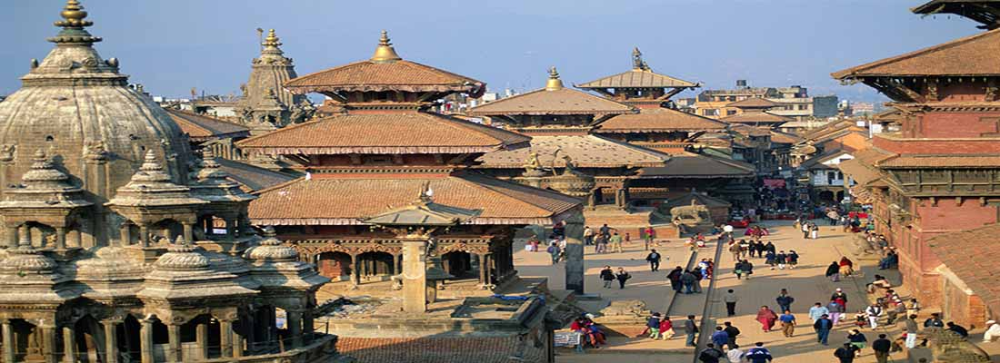

KATHMANDU VALLEY
Discover ancient temples and monuments in the valley of the Gods where Hinduism and Buddhism co-exist in perfect harmony. Learn about the myths and legends that shaped the lifestyle of Nepalis for centuries, since ancient times. Savour traditional Newari food cooked on wood ovens while you stroll through the charming little alleys around the Durbar Squares of the three cities of the Kathmandu Valley; Bhaktapur, Patan or Kathmandu. Buy handicrafs from artisans who still work according to old traditions that go back centuries. Admire the fine architcture and exquisite woodcarvings of the Newar craftsmen whose artistic brilliance are showcased around the cities in the form of temples and monuments built centuries ago. Handicrafts of the Kathmandu Valley Watch how the people of the valley still use their temples to practice rituals that have been passed from generation to generation. Enjoy the colourful festivals of the valley that involve Gods and Goddesses including the Living Goddess Kumari on several occassions. Follow the chariot processions that negotiate the narrow streets of old Kathmandu. Visit the 7 monuments designated as UNESCO World Heritage Sites around Kathmandu in 48 hours. There is a famous folk story that narrates the establishment of the Kathmandu Valley. Long ago, during the Pleistocene era, Kathmandu Valley was a vast lake – a beautiful exhibition of aquatic flora and fauna. Around the same era, when Manjushree, a holy Buddhist Saint from Tibet, saw a beautiful lotus flower floating in the center of the lake, boundless admiration started to flame inside his heart, which evoked his devotion to hold and worship the flower. Chobar Gorge - Where Manjushree drained the Kathmandu Valley He, then, cut the Chobar Hill which now can be seen as a deep gorge, letting the lake water drain out, leaving a fertile valley for human settlement. Later the settlement became a well-known terminal for diverse people; for devotees (both Hindus and Buddhists), Tibetan and Indian merchants, artisans, emperors, explorers, historians, hippies, according to the respective era, and – now - for tourists from around the world. The Kathmandu Valley has always been a melting pot of diverse cultures, religions, arts and crafts. The Gopala and Kirat dynasties ruled at the earliest periods, followed by the Licchavi (300-879 AD), who, correspondingly, developed the city with a passion, traditional art, and religious belief. Kumari the Living Godess of Kathmandu The many dynasties that ruled the valley have left a rich legacy in the form of cultural and religious harmony; the varieties of temples of Hinduism and Buddhism that are standing next to each other for centuries, diverse ethnicities, colorful festivals, and celebration. All these can be seen within walking distance from your hotel in Kathmandu. The Kathmandu Valley comprises three historic cities - Kathmandu, Patan, and Bhaktapur, which were once independent states ruled by Malla kings, who ruled the cities from the 12th to the 18th centuries and competed with each other to glorify their reign by building monuments and temples that showcased the craftsmanship and architectural skills of newar artisans. It was a time when even the mighty Mongol Emporers like Kublai Khan hired exceptional craftsmen from the Kathmandu Valley to glorify their empire. The famous Pagoda style architecture is a gift from the Kathmandu Valley to China. Now the Kathmandu Valley is home to seven sites which make the valley a UNESCO Cultural World Heritage Site, a reminder of the golden era in Nepali architecture.